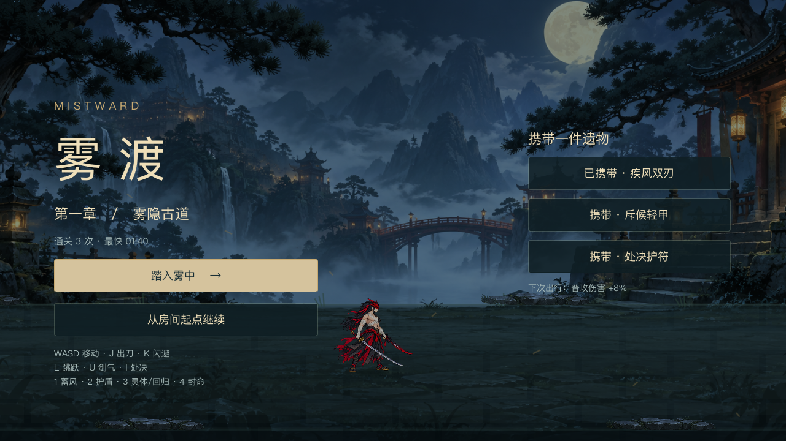
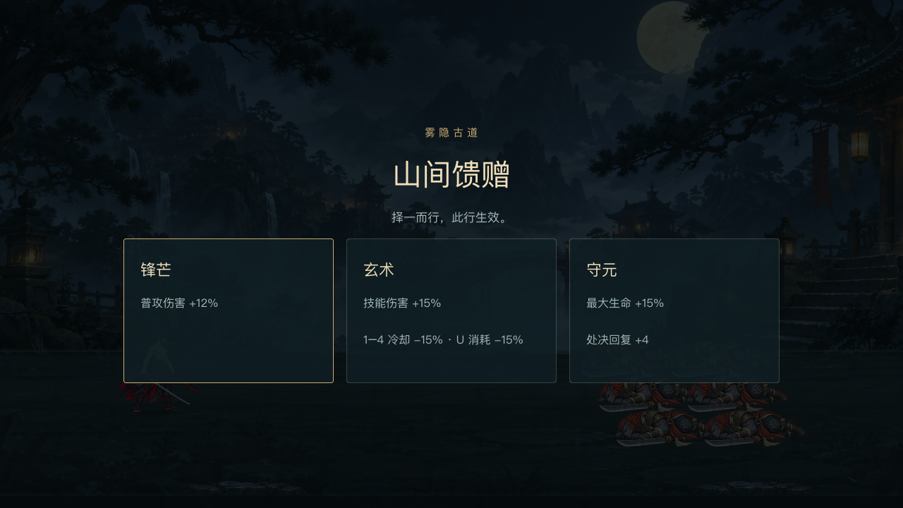
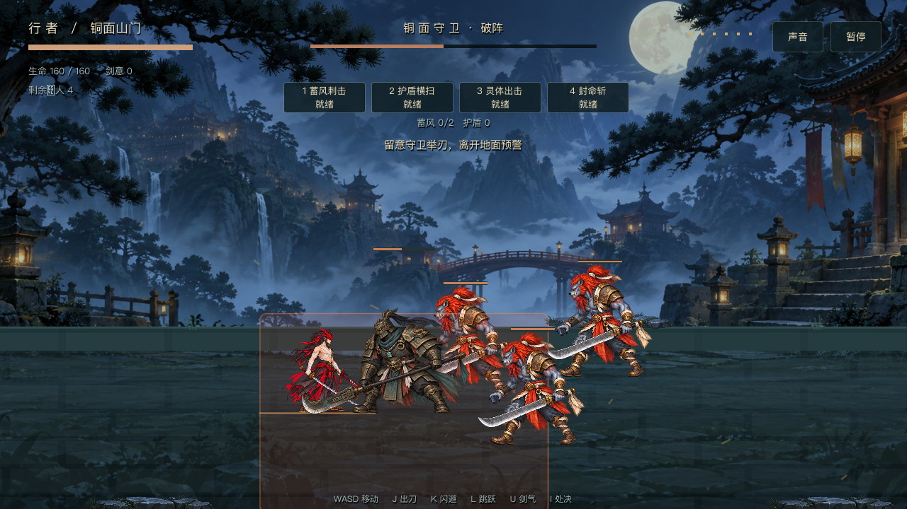
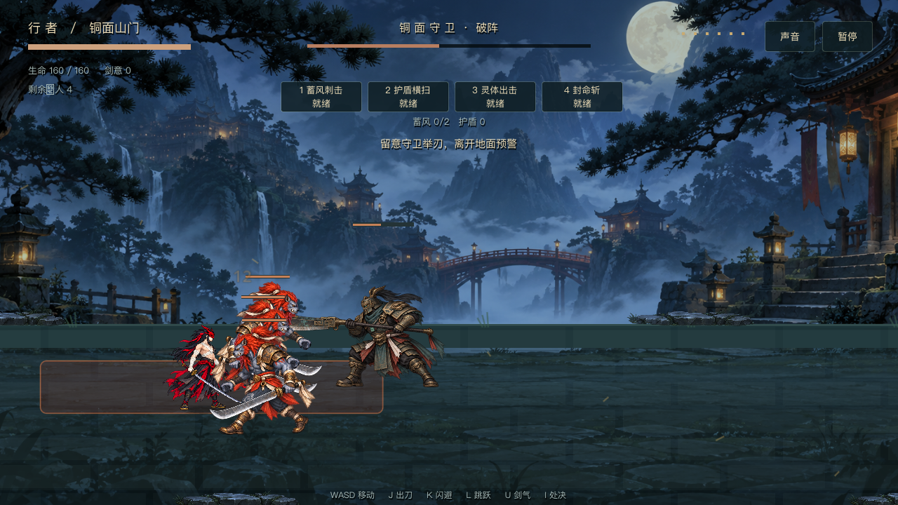
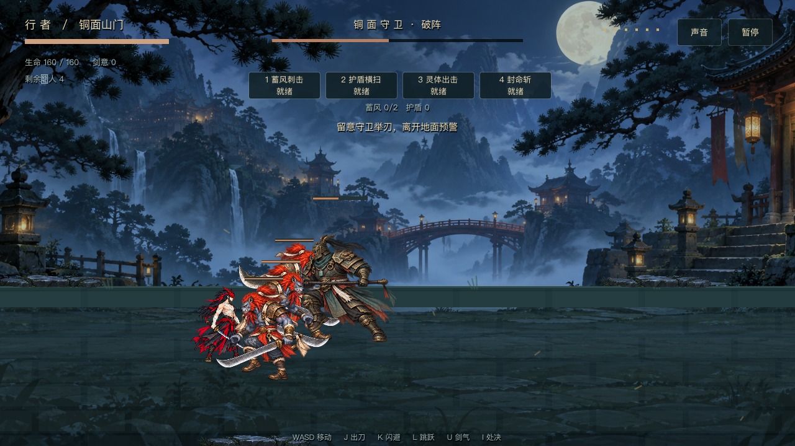
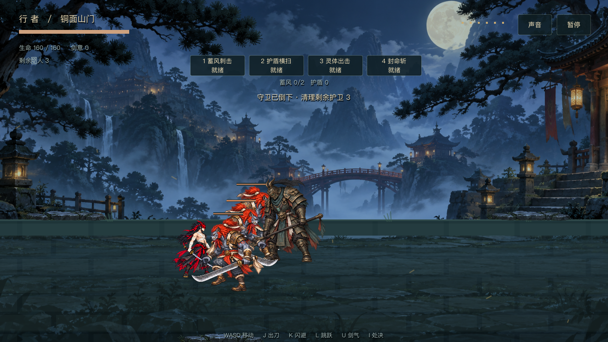
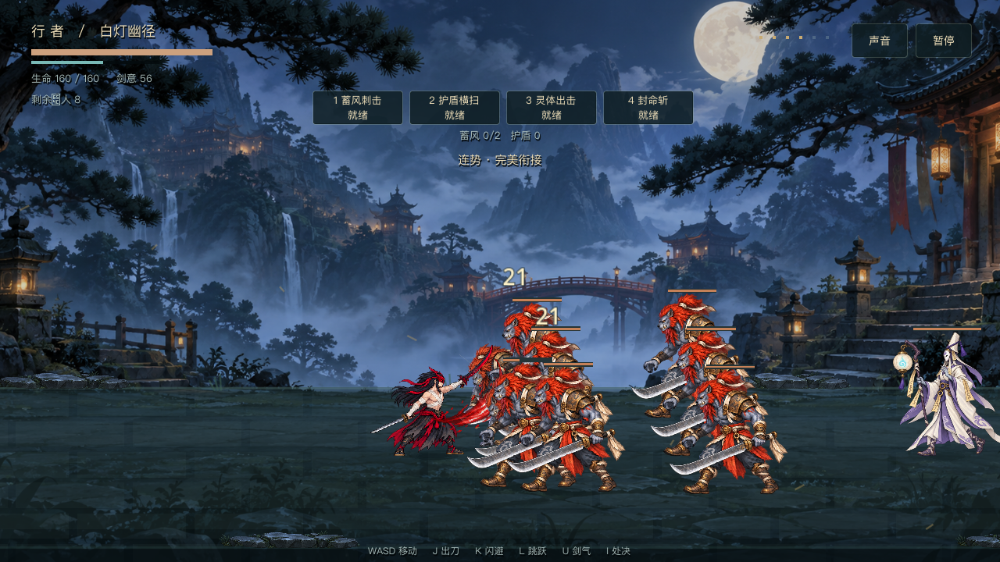

内部机制优化 · 已实现
- 处决锁定唯一残血目标，满血 Boss 不再被误杀；回血一次结算。
- 完美连招加成覆盖同刀全部目标，空挥、换招与打断后失效。
- 护盾完全吸收时不中断、不击退、不定格；溢出伤害正常受击。
- 首战后获得成长；玄术缩短 1–4 冷却与 U 消耗，修正锋芒说明。
- 小兵错位等候，后排短暂延迟接敌；尸体两秒保留、一秒淡出；剩余敌人与护卫提示。
- 遗物下次出行生效，支持携带切换、成绩与设置保存、房间入口检查点继续。
首页：成绩、继续与遗物

首战后成长

Boss 二阶段实际 AI 出招
以下通过正式 Run.step 与导演调度渲染。观察用场景设定 Boss 二阶段、重置玩家生命以完成取景，不代表正常难度样本；整关正常输入机器人另行通关验证。



Boss 死亡后清理护卫

群战错位与剩余敌人

现有全部 Godot 回归通过，额外机制 18 项、成长与存档 35 项、两个独立进程写入/读取通过。坏档备份回退、旧版本迁移、未来版本保护、保存失败、检查点验证有对应覆盖。完整日志 · 真实渲染日志
本轮实现已纳入本地 Git 提交，未推送；本轮新机制未声称真人手感或移动端验收通过。保存位置使用 Godot user://progress-v2.json；继续从房间起点重建遭遇。